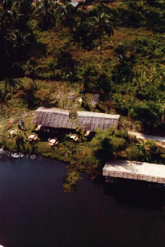
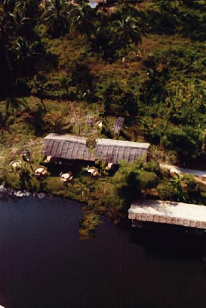
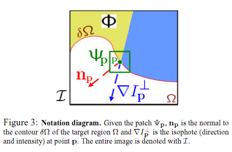
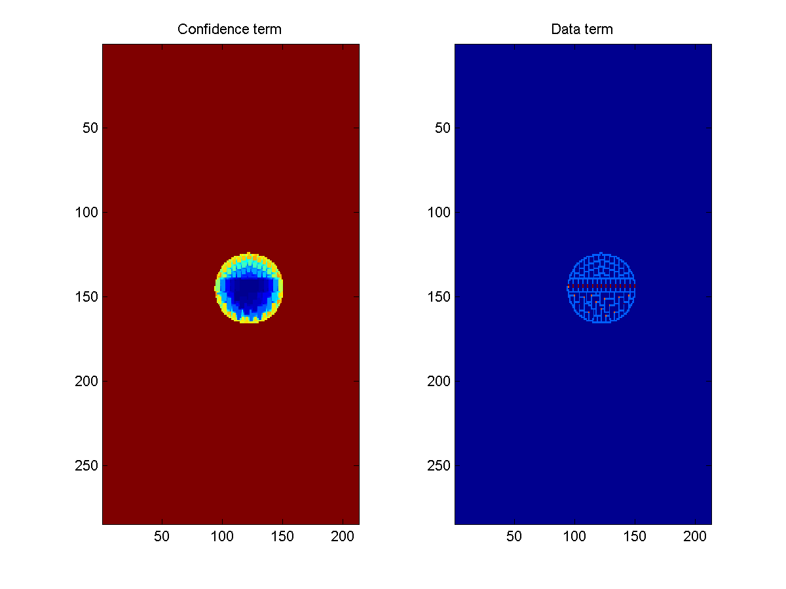
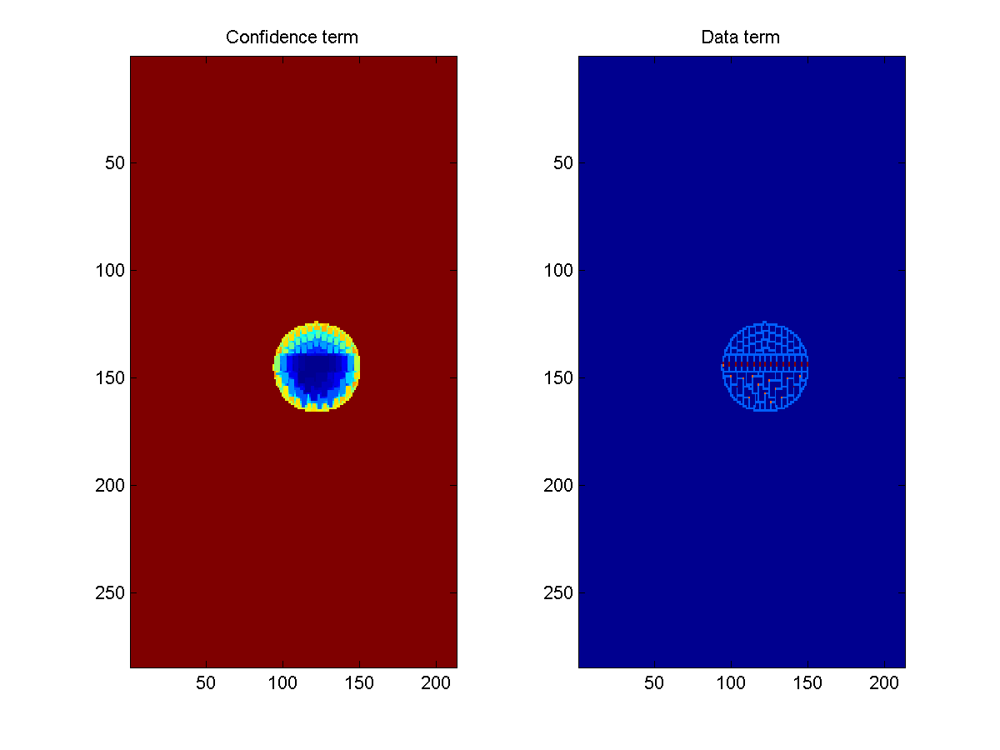

{kind=link}

 

Deliverables: presentation slide (PPT) (PNG) (HTML), everything but the movies: source code, samples & results (ZIP)
A new algorithm is proposed for removing large objects from digital images. The challenge is to fill in the hole that is left behind in a visually plausible way.
In the past, this problem has been addressed by two classes of algorithms: (i) "texture synthesis" algorithms for generating large image regions from sample textures, and (ii) "inpainting" techniques for filling in small image gaps. The former work well for "textures" -- repeating two-dimensional patterns with some stochasticity; the latter focus on linear "structures" which can be thought of as one-dimensional patterns, such as lines and object contours.
This paper presents a novel and efficient algorithm that combines the advantages of these two approaches. We first note that exemplar-based texture synthesis contains the essential process required to replicate both texture and structure; the success of structure propagation, however, is highly dependent on the order in which the filling proceeds. We propose a best-first algorithm in which the confidence in the synthesized pixel values is propagated in a manner similar to the propagation of information in inpainting. The actual colour values are computed using exemplar-based synthesis. Computational efficiency is achieved by a block-based sampling process.
A number of examples on real and synthetic images demonstrate the effectiveness of our algorithm in removing large occluding objects as well as thin scratches. Robustness with respect to the shape of the manually selected target region is also demonstrated. Our results compare favorably to those obtained by existing techniques.
I implemented the entire algorithm from the paper. A pseudo-code description of the algorithm (from the paper) follows. Let R represent the region to be filled, I the entire image, S=I-R the source region from which candidate exemplars are chosen, P(p) the priority of a pixel, C(p) the confidence term for pixel p, D(p) the data term for pixel p, and t the iteration:
The main contribution of this paper is the priority/patch-ordering mechanism that allows an exemplar-based approach to respect the structural features of the input image. The priority is composed of a confidence term, C(p), and a data term, D(p), both defined over pixels:
Intuitively, the confidence term measures how sure a pixel is of its own value; this is computed from the confidence of surrounding pixels that have already been filled (or weren't in the fill region to begin with). Confidence tends to decay as the center of the fill region is approached. Because of this, if the priority only consisted of the confidence term, the patches would be selected in an "onion-peel" manner, which is typical of current exemplar-based approaches. Confidence ignores structural information in the image, however. This is why the data term is necessary; it is a combination of how strongly an isophote at a pixel collides with the contour at that same pixel. An isophote is basically the gradient at a pixel rotated by 90 degrees---it captures the "strength of flow" of an edge. If only the data term is used in the priority, however, edges end up propagating where they shouldn't. It is the harmony between the two factors that creates good results. In this vein, both quantities are normalized (to lie between 0 and 1) by appropriate factors. Figure 3 in the paper diagrams the quantities.
I did not use the CIE Lab colorspace as they did in the paper because the choice of colorspace is orthogonal to the algorithm. The CIE Lab colorspace does have better perceptual uniformity than the RGB colorspace, as the authors point out, which is why they use it in their implementation.
I developed the algorithm in Matlab and coded a critical portion in C (i.e. a Matlab MEX-file). The code is small and easy to use: it is contained in one M-file and one C file, totaling 188 lines of code and 104 lines containing semicolons ("logical" lines of code). For usage notes, see README.txt.
In short, the results turned out quite well. The only major discrepancy was in the execution speed between my implementation and the authors'. All experiments were run on a 2GHz Pentium 4 laptop with 256MB of RAM. All results presented in this report are mine alone. In the images for the confidence and data terms, blue = 0, red = 1. Values in between are scaled to the appropriate color.
I created a 213x284 synthetic image for testing and sanity checking. My implementation took 25 seconds to inpaint this image. It correctly painted in the missing parts of the synthetic image. The interesting thing to note about this example is the presence of the red dots in the data term; they lie along the hard edge between the black and gray regions. Because of the presence of such a strong edge, the pixels along the edge get a high priority; therefore, those patches get filled first. Here is a movie showing the region-filling for the synthetic image (.avi files): compressed, 52KB, uncompressed, ~14MB.


 

For a natural image to work on, I used the photo of a bungee jumper from the paper. This allows me to compare my implementation with the authors'. My implementation takes 114 seconds to inpaint this 206x308 image; theirs, 18 seconds. The previous state-of-the-art (Harrison's resynthesizer), takes 10 minutes, as they report. Their experiments, however, were run on on a "2.5GHz Pentium IV with 1GB of RAM", so it's not quite a fair comparison. Furthermore, 57% of of my execution time is spent in one routine, bestexemplar (even after coding its critical portion in C!), which is time-intesive because it needs to do a SSE calculation for each patch (sliding window) in the source region. It is possible they have a smarter implementation of that subroutine, but it isn't mentioned in the paper. Another 20% is wasted in getpatch which merely does some indexing calculations. Also, the authors don't mention what language they used, but I suspect it was either C or C++.
Here is a movie showing the region-filling for the natural image (.avi files): compressed, ~1MB, uncompressed, ~60MB.
|
|
Again, the data term reveals something about how the linear structure is preserved. At two points in the jumpers's torso, the data term becomes larger, along the two edges created by the roof of the building in the background (it's hard to see; look for the red dots).